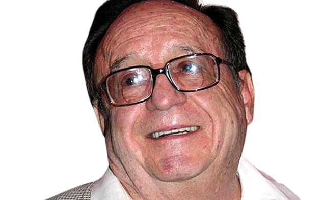

Roberto Gómez Bolaños Ator
1929 - 2014
É considerado um humorista que criou personagens que divertiram não só várias gerações de mexicanos como também milhões de pessoas em meia centena de países.

Biography
Roberto Gómez Bolaños (1929-2014) foi um humorista mexicano, escritor, ator e produtor de cinema, televisão e teatro. Ficou famoso mundialmente por interpretar os personagens "Chaves" e "Chapolin". Roberto Gómez Bolaños nasceu na Cidade do México, México, no dia 21 de fevereiro de 1929. Filho de um ilustrador de jornais e pintor, Roberto esteve sempre envolvido com o mundo das artes. Apesar de ter estudado engenharia elétrica, nunca exerceu a profissão. Com 22 anos trabalhou como redator em uma agência publicitária. Entre o final da década de 1950 e início de 1960, foi roteirista dos programas Cómicos y Canciones e El Estudio de Pedro Vargas, que alcançaram o primeiro lugar em audiência.